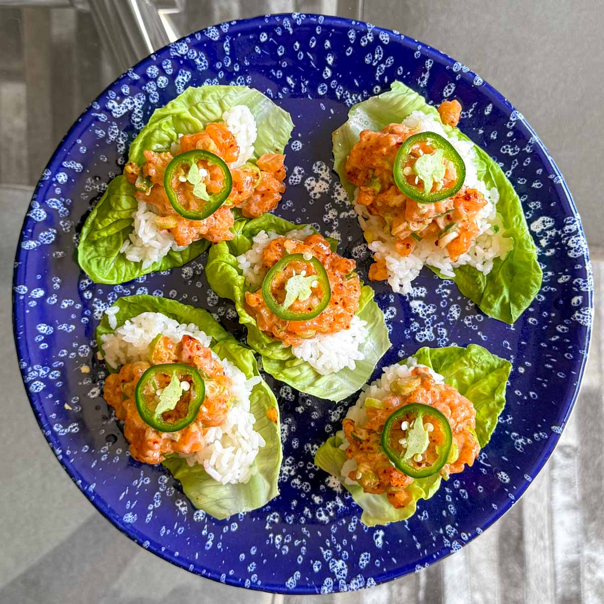

Salmon
Home

Description
Fresh, vibrant and full of flavour, these Spicy Salmon Lettuce Cups are the perfect light lunch or dinner.
ingredients
- Sashimi-grade salmon
- Spring onion
- Sriracha
- Kewpie mayonnaise
- Toasted sesame oil
- Little gem lettuce
- Jalapeño
- Lime wedges
Steps
- Optional step: Chill the salmon in the freezer for 10 to 15 minutes before slicing. This firms up the flesh, which makes it easier to dice.
- In a small bowl, mix the salmon, spring onion, sriracha, kewpie mayonnaise and toasted sesame oil until well combined. Season with salt and pepper to taste, adding extra sriracha or a pinch of chilli flakes if you like more heat.
- Trim the root from the lettuce and separate the leaves. Wash well and dry thoroughly. If using rice, season it lightly with salt.
- Spoon some rice into each lettuce cup, followed by a generous amount of the salmon mixture. Top with a slice of jalapeño and finish with a squeeze of lime juice just before eating.